10 熊全治的回忆
已故中国佛教协会会长的赵朴初曾手书这样的诗：
生固欣然，死亦无憾。
花落还开，水流不断，
我兮何有，谁与安息，
明月清风，不劳寻觅。
一般人是不会像他这样的超脱，就像江淹说的：“自古皆有死，莫不饮恨而吞声。”
熊全治（1916．2．15—2009．5．6）是美国伯利恒市理海大学（Lehigh University）教授，微分几何学家。早期研究局部射影微分几何；旅美后，主要研究整体微分几何，特别是积分几何。1967年3月创办《微分几何》（Differential Geometry）杂志并任主编，这是世界上最有名的数学杂志之一。20多年前他把撰写的自传给我，还有他八十大寿的一些相片，之后就没有再联络了。他在2009年5月去世，我想他是属于“生固欣然，死亦无憾”的人。
这20多年来由于健康及眼睛的关系，我停止与朋友长辈写信联系。一些长辈像陈省身、熊全治、李迪、杨忠道等都失去联络。十年前恢复视力，开始动笔写文章，才发现这些长辈已谢世了。
1986年8月3日—11日在伯克利举办世界数学家大会，我在那里遇见熊全治教授。他感谢我能写苏步青教授的事迹，并且告诉我有两个温州老乡可以联络：一个是谷超豪教授，另外一个是杨忠道教授（他也是平阳人）。谷超豪在上海复旦大学，杨忠道在美国大学教书。
我记得熊全治在大会期间把我介绍给谷超豪。（我们之间可能有过谈话。因为记忆不行，我印象是见过谷先生，可是现在却完全记不清当时的情景。）
杨忠道我一直没有联络，只有在快退休时看到熊教授的信，然后给杨教授写过一封信。熊先生是很谦虚的人，年纪比我大一大截，每次给我的信却都尊称我“兄”。他写的信字迹工整，有笔误就涂改重写，可以看出他做事认真有条理，不像我糊里糊涂，粗心大意。
我对他说我想写关于他成长和学习的经历，是否可以提供一些资料。他很快回信，由于他忙着给新加坡世界科技出版社写有关微分几何的书，因而没有时间写他自己的经历。但是他保证在工作结束后会写给我。
他是“言必行，行必果”的人。过了一段时间他寄来一大沓手稿——他的自传。而我却因病把他的信和自传放在一个纸箱里，20多年过去才打开。本来想重写，但是由于体力日衰，怕吃力不讨好。这里呈现的文字只是修改了一些笔误，以及改写一些地名和人名，并且找了一些和他有关系的相片，其他基本没有删减和改动。
希望读者通过阅读这些宝贵的文字资料，可以了解美国数学近况及一位早期出国的中国人在异乡学术界奋斗的故事。
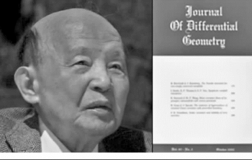
熊全治及他创办的《微分几何》杂志
1989年3月，理海大学用熊全治创办《微分几何》的一部分获利50余万美元设立“熊全治数学发展基金”（C．C．Hsiung Fund for the Advancement of Mathematics）。
以下是他的自传（写于1990年5月）。
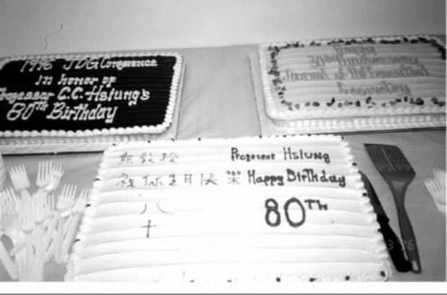
熊全治八十大寿的蛋糕
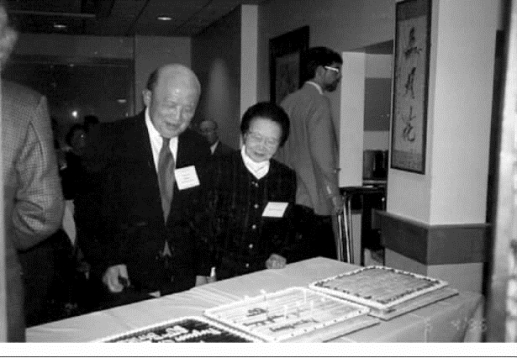
熊全治与夫人余文琴看寿糕
我的家世
我于1916年2月15日子时出生于江西省新建县雪舫（现改为雪坊）村，那村里住有两三百户人家，村民大都以农为业。但那里耕地不多，村前有一小湖，村后有小山环绕，背山面水，山清水秀，风景美丽，环境安静，人们朴实勤俭，是一个可爱的小村。该村距南昌市约有60华里（约30千米），以往来往的唯一交通工具是帆船，天气好时，仍需一天，现有公路，但路狭不平，乘汽车亦需两小时左右始可直达。
我家亦久以农为业，至我祖父时，他与其兄即开始努力读书。他们两人皆有读书天分，至少当可得一功名，但不幸两年内他们两人因病先后去世，死时均很年轻，仅30岁左右。我祖父遗下三男，我父亲排行第二，当时仅8岁。我曾祖父亦早已去世。因当时家境困难，我父亲那一代只有他一人勉强能继我祖父之遗志求学。父亲很聪明、努力，一下就考取秀才，但不久清朝废除科举制度，在各省创办西式学校。我父亲即进江西省在南昌新设立的高等学堂攻读，四年后以特优成绩在那里毕业，被聘为在南昌的江西省立第一中学之监学（即教务主任），并兼教数学。父亲喜欢数学，他有数学天分，那时在高等学堂所用之教本均是英文的。后来我看到他的作业、课本，字写得整整齐齐，特别是平面几何图形用尺及两脚规画得很精致，与课本上印的差不多。后来我两个哥哥同我从小学到初中的数学均是由他在家里先教的，因我对数学自小就有很好的基础，我自然地渐渐对它有兴趣而终与它结下一生不解之缘。
我有两兄及弟妹各一，大兄全淑因患肺病高中毕业后四五年即去世，二兄全淹及小妹全沬均进武汉大学分别读数学及生物，毕业后均留校任教一直至现在。小弟全滋在同济大学测量系，毕业后来美国习土木工程，现已退休。
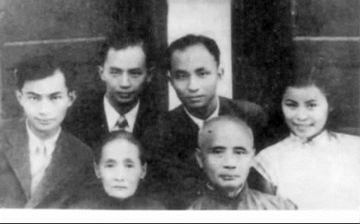
1945年中秋节，抗战胜利后家人始团圆。熊氏兄妹（右起：全沬、全淹、全治、全滋）与父（熊慕韩）母（熊杜氏）在重庆南岸李家沱合影。
我的小家庭
1942年7月10日，我同余文琴小姐在贵阳结婚，这当是我一生中之一大事。余小姐生长在贵阳，也是进浙大的，读物理，比我低两级。在校时我们已很熟，但抗战开始后我们就分开了，一直到1939年，我们在贵阳重逢。她于1949年在密歇根州立大学获得物理学硕士后，因要照顾女儿无法继续读学位，但在威斯康星大学及麻省理工学院继续旁听物理课。1952年我去伯利恒理海大学任教，她在那里的洛生布登社区学院（Northampton Community College）作助教授，教授物理。后来她用英文写了一本很有名的中国烹饪书，书名为“Chinese Cooking for American Kitchens”，1978年出版，广为中西人士所采用。她除教书及著书外，就料理一切家事，使我有全部时间做我的工作，没有她的帮助，恐连我现在一点小成就也不会有。
我的女儿兰馨（英文名为Nancy）于1947年10月2日生于密歇根州首府兰辛（Lansing），于1969年毕业于宾州费城的宾夕法尼亚大学（University of Pennsylvania），主科为有机化学，1974年在哥伦比亚大学获得生物化学博士学位后，分别在耶鲁大学做一年研究，在普林斯顿大学六年改研究微生物学，后在麻省剑桥的生物技术公司任药科主任及总经理等职。
我所受的教育
我3岁时，父亲将我们一家连祖母一道由雪舫村迁往南昌市居住。我的小学教育是在江西省立第一师范附属小学读的，因我在学校里跳了一级，所以10岁时（1926年）就毕业。毕业后进江西省立第一中学，那是我父亲任教的学校，当然是很好的。我于1932年高中毕业后，就要升大学。那时江西省没有大学，要去投考省外的国立大学，竞争很激烈，同时政府在发展工业，甚鼓励中学毕业生到大学去读工程。我先去武汉，后去上海投考几所大学，我都是报考土木工程，但都未获录取。在这些学校未出榜前，我在上海看到浙江大学在杭州第二次招新生的广告，我决定去杭州一试（第一次招考是在杭州和上海同时举行，但我那时在武汉不能参加）。那时我已知浙大有陈建功及苏步青两大数学家，而我又酷爱数学，所以报考数学系。我那次数学考得很好，被录取了，从此我就在数学大道上寻求真理。
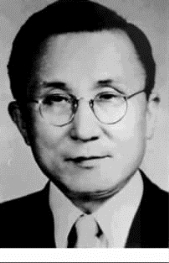
陈建功
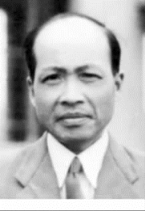
苏步青
陈、苏两先生授课时全用浙江官话口授，学生笔记，特别是苏先生调节口授之速度适当，使学生可全部记下来。有人或会以为此种教授速度必太慢，实际上每堂课所授之材料会使人意想不到之多。五十余年前陈、苏两先生即认为我国应在国内多培养研究人才，不能专靠外国留学生，因之训练学生在毕业前要有独立读书及读论文之能力，每个学生在四年级时必须选一教授给他或她一德文或法文书及一篇体现学科最近发展的论文读，学生轮流向全系教员作演讲报告，报告次数要依学生人数多少而定。那时每年学生人数不多，大致每隔两三周便要作一次报告。在报告时若不幸被老师找到错误，而当时又不能回答时，则下周必须重新报告。此种情形也常发生，陈、苏两先生甚注意此两报告，特规定此两报告必须及格，否则不管该学生其他成绩如何好亦不能毕业。
1935年秋季起我是大学四年级生，我选了苏先生做我的导师，他叫我读克莱因（F．Klein）的《高等几何》。那时的德文确实写得很好，非常文学化，因此不易读。关于论文，苏先生选了一篇那时刚在美国数学会会报上发表的关于二次曲线的一新射影特性的论文。到该年12月我不但将该论文报告完毕，并且继续那篇论文的题目自己做了一篇，后来我的这篇论文登在1937年的浙江大学科学报告上，一般那报告上的文章都是教授用西方文字写的。
我大学毕业后的初期生活
（一）在杭州
在浙大数学系好的毕业生都留下作助教，陈、苏两先生继续指导他们，希望能做出论文来。好几年以后第一个训练出来的是方德植先生，他几年内在日本及意大利杂志上发表了好几篇论文，因此浙大数学研究氛围渐浓，后来能做论文的毕业生亦渐增多。
自卅年度起关于国内官费留学考试除偶尔有省官费留学考试外，中美庚款留学考试每年有一次，中英庚款考试每两年有一次，但此两考试科目中不一定每届都有数学。中英庚款考试委员会每届都请苏先生出题，那些题目大半是我们在浙大的小考及大考题目。依理浙大毕业生去考是要占大便宜，但从无一浙大毕业生去参加过。原因很简单，第一，两位老师公开反对；第二，同学被迫专心做研究，当无时间去准备考试。去外国留学除去读学位外，另外一种就是去做研究，中华文化基金委员会（是用庚款办的）常补助在国内有很好研究成绩的去欧美研究几年（但大多数是一两年）。研究科目很广，数学亦在内，华罗庚先生去伦敦研究就是一例。
1936年我在浙大毕业，毕业后依我之志愿留校任研究助理员，专做研究，无任何其他任务。我是数学系第一个该种人员，跟随苏先生研究射影微分几何。苏先生开了一门课，讲授他新编之关于射影微分几何的讲义，我除听那门课外，就读些论文，一年内做了一篇关于射影微分几何论文，该论文后来登在1940年的中国数学会年刊（西方文字版）上。
（二）在建德、武汉和重庆
1937年之“七七”卢沟桥事变发生后，战火于秋季烧到上海，杭州当不安宁。浙大临时迁往建德，我亦随之去那里。那时战争日继扩大，似非短期内可望停止，为长久计，浙大当局又讨论向江西泰和迁移，但议论纷纷，一时难以决定。在那纷乱情况下我当不能做研究，斯时我父亲及我二哥均在武汉，只有我母亲及妹妹留在南昌老家。我挂念她们将来的安全，于是离开建德回南昌，后随我母亲及妹妹去武汉。我们在那里住了半年左右，后因武汉危急，我们又迁往重庆，那时我父亲也随他们的工作机关到重庆。我在武汉时浙大已搬去泰和，但我要照顾我母亲和妹妹，不能去那里。
我在武汉时有一天中英庚款董事会登一启事，谓因时局不安定暂时停止留英官费考试，但将用该项经费补助科学工作人员在国内研究，并同时颁布申请详细手续。那时我无工作，于是就将我那两篇论文送去申请，数月后我在重庆得到通知，我已获得补助。那时浙江大学已改迁到广西宜山复课，于是我就接受中英庚款补助到宜山，回浙大随苏先生做研究。
（三）在宜山
1939年3月间，我抵宜山，陈建功先生一人已到，家眷未同来。苏步青先生因送家眷到平阳老家，尚未到达。陈先生同另外一陈先生（陈仲和先生，浙大土木系教授，他亦是单身在那里）同住一大房间。我去看陈先生后，得知在他们那里大门前面尚有一很小的房间空着，我就马上租下来。搬进后我即加入二陈先生的吃饭组，每天早上大家轮流烧稀饭，每人再向附近一饭店各买几个小包子，配合起来做早饭，另外中饭同晚饭都包在附近一饭馆。那时无电炉，我烧稀饭起步最困难的工作就是放木炭在一小火炉内起火，经过几次以后，慢慢习惯，起火即无问题。但两陈先生每天起床都很早，轮到我烧稀饭的那一天，我必须也很早起床烧好稀饭等他们。那时我很年轻，喜欢睡懒觉，早起对我是一件难事，但我也无法，不得不服从多数。
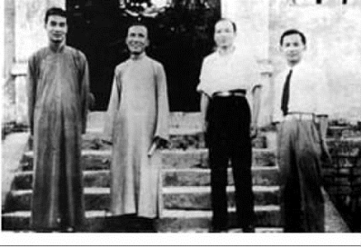
熊全治、苏步青、陈建功等（右起）在宜山文庙前
不久苏先生亦单身来宜山，他喜欢同我们一道住，但我们那里已无空房，结果他愿意和我挤在那一小房间，我当然欢迎他。他每天起床早，但他很好，从不催我早起，他也加入我们的吃饭组。经陈建功先生的推荐，我们四人之中晚饭的点菜及记一切账目全由我操办。陈先生每餐都要饮一两杯绍兴老酒，我总是点一个小菜（如白切鸡，两广一名菜）给他下酒。我们四人要谈天时都在陈先生的大房间，我们什么都谈，陈、苏两先生都信任我不传话，因此他们当我面常讨论数学系里的行政。
以上仅是关于我同陈、苏两先生在一道时生活上的几件细微事件，现在回忆起来仍是难得而可贵。另外，虽然日机曾来宜山大轰炸过一次，我们天天逃警报，但因我同苏先生日夜在一道，不能偷懒并且随时可向他请教，故我的研究成绩很好，在宜山共做了五篇论文。我们在那里住了一年多一点，直至日本军队在南宁登陆、柳州告紧为止。
在宜山时，因战争关系我们同国外的联络除有时由航运间或得到一点消息外几乎完全断绝，在那种环境下虽然努力研究，亦是等于闭门造车，甚难出门合辙。1940年初在宜山时中华文化基金会宣布（当是抗战时期最后一次）仍补助科学工作人员到国外（那时只能去美国而不能去欧洲）研究，我就告诉苏先生此消息，并表示我想申请到芝加哥大学同莱恩（E．P．Lane）教授（他是美国的射影微分几何大家）工作。苏先生知道我对研究甚有兴趣并且很努力，他这次不但不反对我留学，并且很高兴地答应帮我写推荐信。我的申请送出不久以后，有一天浙大竺可桢校长由重庆开会回来对苏先生说：他在重庆会到姜立夫先生，姜先生对我的申请甚有兴趣，但他觉得我不应去芝加哥而应去普林斯顿。竺校长即回答姜先生说：关于这点他要回去问苏先生之意见。后来苏先生同我都觉得能到普林斯顿当更好。于是我请竺校长如是回答姜先生。因为当时姜先生是国内最有影响的数学大家，他既然有意要我去普林斯顿，竺校长、苏先生及我三人都甚高兴，以为这次我必可去成美国。但事出于意料之外，因某种原因中华文化基金会最后决定那年不补助读数学的去美国做研究。
（四）在贵州
1940年春浙大又由宜山迁往贵州遵义，到后安定下来，苏先生继续讲授射影微分几何及指导学生做研究。那时除我以外，还有张素诚、白正国及吴祖基三位，相当热闹。后来学校当局觉得地方太小不适于全校之发展，于是翌年初，理学院及农学院迁往湄潭。在湄潭我们很快就恢复研究，那时全面抗战已三四年，虽在物质生活方面很苦，但大家都能继续求学或研究，一直维持那可贵之精神至抗战结束。
我得中英庚款补助在浙大研究两年后，陈、苏两先生调我回浙大任讲师，又两年后晋升我当副教授，该项职位不久即被教育部核准。因在战时政府不准教授出国，但得外国之邀请或可例外。在湄潭有一天竺校长告诉苏先生，因浙大与印度已建立文化交流关系，竺校长想派我去印度研究一两年，要苏先生问我的意见。我觉得那时印度一切条件虽均比在国内好，但我是一直想去美国做研究，由印度去美国恐会比由国内直接去更难，所以我决定不去印度。但我要去美国之心仍未曾稍懈，于是又告诉苏先生，我想直接写信给美国几个几何学教授，要他们帮我找一奖学金，同时我亦请苏先生代我写几封信。苏先生赞成我的计划，并答应帮忙。我记得他写过一封给麻省理工的维纳（N．Wiener）教授，因维纳教授访问中国时，苏先生曾见过他。他人很好，回苏先生的信说他同情我的情况，但那时麻省理工无几何方向，希望我能在别处申请成功。我写了一封信给芝加哥大学的莱恩教授，又写了一封给密歇根州立大学的格罗夫（V．G．Grove）教授。格罗夫教授是研究射影微分几何的，对该科有相当的贡献，他在芝加哥大学获得博士学位。那时我所有发表过的论文在《数学评论》（Mathematical Reviews）上的评论都是格罗夫写的。信发出后不久，格罗夫就回信，给我一研究助理奖学金，月薪75美元，学杂费一律免缴。得此信后我当是不能形容的特别高兴，马上去告诉苏先生，他亦甚高兴，并要去问竺校长意见。后来苏先生告诉我，竺校长说国内因抗战耽误了许多人才，那时教育部正在筹划战争结束后将在各大学选送一大批教授出国深造，浙大必有几名，他并保证我一定在内。不过战争何时可结束（那时是1943年）无人可预知。最后竺校长仍赞成我去密歇根，他的理由是早去是好的，到美国总有办法。于是我决定去密歇根，那时我刚结婚不久，内人亦想同我一道去美求学，故我在回格罗夫的信中特再请他帮忙，不久他寄来一免学费奖学金之证件给我内人，于是我们两人就计划办理出国手续。
办理留美手续
我于1944年春离开湄潭去重庆办理出国手续，首先须得教育部批准，再顺次向外交部及财政部分别申请护照及外汇。当时政府原有的教授暂不准出国之限制，要放松那限制困难且费时，兼之政府又常更换人事，因此我前后共花一年多的时间，拖至1945年日本投降后始得到护照及外汇。那时重庆至印度加尔各答还有最后一班客机，若不搭那班飞机，就要中美通航后由上海坐船到三藩市（旧金山）。由上海走恐最少又须等半年，不过由印度到美国恐也要等很久，因有很多人在那里已等了好几个月。我在重庆已等得太久，久则生厌，故想换换环境，最后还是决定由印度走，到那里碰碰运气好了。
在印度和纽约
我是于1945年圣诞节前一天离开重庆的。我们的飞机除在昆明抛了一个小锚外，在圣诞节前夜很顺利飞抵加尔各答。
到那里后我的运气很好，只耽一月就搭到了船。那是一条美国的小货船，主要是送美国军人回国，另外也有几个女客，其中两个为同船两军人的家属。我们的船经过地中海走了30天，于1946年2月25日安抵纽约港。
密歇根州立大学春季学期是在3月下旬开课，我就乘此机会在纽约住了两星期，到处观光。当我在国内时我在美国数学会Bulletin 上登载过好几篇文章，那时哥伦比亚大学史密斯（R．A．Smith）教授是主编，因之我与他通过好几次信，我到纽约后就去探望他。他对我很好，马上请我到他的学校餐厅去吃中饭，并介绍我认识了他系里好几位教授，特别是微分几何学大家卡斯纳（E．Kasner）。史密斯知道我想读拓扑后，他就要给我一奖学金，欢迎我在哥大读学位。当时我觉得我能到美国来是完全靠格罗夫的帮忙，我不能一有更好机会时，即将旧恩人抛弃，我相信以后仍有读拓扑之机会，因之我就辞谢了史密斯的给予，仍到密歇根去。
在密歇根
我到密歇根后，格罗夫对我特别好，可以说是无微不至。此外数学系系主任弗雷姆（J．S．Frame）教授亦对我很好，尽力帮我的忙。在那里读博士学位需要一副科，我的主科当然是微分几何，他们知道我在浙大没有读过统计，于是就将统计做我的副科，在那里我选了6门统计课，其他大部分的学分都是由浙大转来。我的主要困难还是在英语，于是我就在英文系里请人从发音开始补习英语。我当然日夜努力学习，翌年在暑季学期数学系特别开一小班微积分课让我教，教那班对我的英语大有帮助。自秋季起我就教正式班，那时我已考过博士学位的预试，对论文我是无问题的，至第二年8月我修满学分后就正式获得博士学位。
内人余文琴于1946年6月间乘美国总统号轮由上海到三藩市再转密歇根东南新城，于7月间到达。休息月余即在物理系选课，后因生女儿，她在生产前后各休息半年，因之延至1949年3月始获得硕士学位。
与我们同时在密歇根州立大学求学的浙大毕业生还有朱祖祥和赵明强夫妇两位。很巧的是，1949年秋竺可桢校长在巴黎出席联合国会议完毕后来美国访问，他先到麻省剑桥，我们浙大校友四人即设法在我们学校里替他安排几个演讲，欢迎他来。他很高兴在我们那里待了三天多，后因回国日期到了，他不能到其他地方（如密歇根大学、威斯康星大学等）与其他浙大校友会晤，就直接从我们那里去芝加哥转三藩市回国去了。那时我同竺校长谈得很多，他知道我在美国求学之目的，对我素甚关切，在浙大时曾给我很多帮助与奖励，那次访密歇根以后，他对我更亲切。他常来信详告国内各种情形，1949年后他仍继续来信，也曾提到过如何组织科学院，有一次他还特别要我在美国替他调查当时在美国的中国科学人员。1950年代中曾有一段时间国内来信鼓励在美国的亲友回国服务，但竺校长在信上从未催过我回国，因他知道我学得我所求之后，我必会马上回国的。
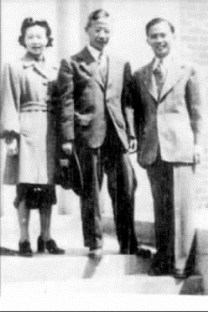
1946年竺校长（中）和熊全治夫妇在密歇根州立大学
我于1951年在哈佛大学得到他由莫斯科寄我一封很短的信（信是寄往威斯康星，再由那里转来的），告诉我他是先去波兰出席一科学会议，后去苏联。离国已有三月之久，不日即将飞回北京，信后还附简问一句：他出国前在北京曾寄我一信，问我收到否？接他信后我即回一信，告诉他我未收到前一信，从此以后我就未得他信。我想那时中美已是敌对的，当然他不便与我通信。1972年中美交流恢复后，他曾向第一批华人回国访问团内的人问到我的情况，后来我也与他通过信，告诉他我要回国访问，但因私事拖延至1975年始能成行。那时他已去世，以至不能再见到他一次，是一大憾事。
在威斯康星大学及西北大学
我在得到博士学位前即开始找工作，我运气很好，马上在威斯康星大学找到一讲师职位（那时得博士学位的只能做讲师）。同时哥伦比亚大学的史密斯教授亦尽力帮忙，他介绍我到芝加哥的伊利诺伊理工大学面谈，但我没有去，因我已有威斯康星之聘约。威斯康星数学系主任是兰格（R．E．Langer）教授，另外一台柱教授是麦克达菲（C．C．MacDuffee），他们都对我很好。因为我已发表了不少论文，我的年薪是3 750美元，那是助教授之起薪。秋季开学后不久，有一天兰格教授对我说：“请你来此地，系内没有问题，主要的是院长。我向院长说我们系内没有你，我们就做不好，这样院长才答应聘你。”一个小讲师位置要有这样过分的推荐方可得到，当时中国人找事之难亦可想而知。后来我同许多美国朋友讨论过此情形，他们都很诚恳地说：“我们不是歧视中国人，实际上我们以往都知道中国学生的成绩都是很好的，因为语言和教育方法的关系，我们不知道中国人教书也是好的，所以很多人就不敢冒险请中国人教书。”那年系内连我在内共有五个新讲师，每人的任期都是两年，到了一年半时，系内决定一个都不升级，系主任通知每个人去找事。我的目的还是想做研究工作，可读些拓扑，但同时也找教书的机会。后来芝加哥附近的西北大学对我的教书有兴趣，要我去面谈，我按时去那里。那时系主任是戴维（H．T．Davi）教授，他人很好。他对我说：“系内的人都欢迎你来，没有问题，最后就是要由文理学院院长利兰（S．E．Leland）决定，现在我带你去见他。”这一番话无疑要我当心回答院长的问话，后来有人告诉我，当时那院长在校内势力很大，恐大过校长势力。我们一进院长办公室，我就注意院长的态度，结果我发现他不像一个很严肃（或者可说外表很凶的）的行政主管人员，而是一个很随和的、和蔼可亲的学者。那时朝鲜战争已开始，经系主任介绍后，院长就问我：“你是不是共产党？”我觉得院长是开玩笑问的，无其他意思，所以我也不介意，但那时我心里想若简单回答一个“我不是”，不是太平淡了吗？于是我就回答：“先生，我是一个读数学的。”院长听了大吃一惊，认为我的答话是非常不平凡的，马上对系主任说：“一切都好，我没有再问的了。”系主任也很高兴，因此他们就聘我为“lecturer”，年薪3 600美元，应聘与否须在一月内答复。那时各处都回信无研究的机会，只有哈佛大学的惠特尼（H．Whitney）教授及哥伦比亚的史密斯教授对我特别有兴趣，并且都说到8月间他们才能知道他们有无经费聘我。那是一极不肯定之回答，我不能等他们，于是我就接受西北大学聘约。但出乎意料，很巧的是惠特尼及史密斯都来信邀我去那里研究两年，无其他任务，报酬与西北大学的一样。为维持信用起见，我同西北大学讨论我的情形，最后采用折中办法，我到那里教完秋季学期后再离开，因时间较长他们可找到人代我教完那学年。因我同史密斯关系较久，我就请他代我决定由西北大学到何处较为有利。经仔细考虑之后，他建议我去哈佛，我当然接受他的建议。我教完秋季学期后，在圣诞节前我的弟弟就帮我一道开车到哈佛去。
在哈佛大学
我在哈佛每星期与惠特尼会谈一次。那时他在写那本几何积分理论的书，已不做拓扑方面的工作。斯蒂恩罗特（N．Steenrod）关于纤维丛拓扑学的书刚出版。我自己读那本书，有问题就问他。此外我大部分时间都在麻省理工。我去听胡雷维奇（W．Hurewicz）、怀特黑德（G．W．Whitehead）及安布罗斯（W．Ambrose）关于拓扑同伦及流形几何的课，并参加他们关于拓扑的讨论会。我是1950年底到那里，1952年9月初离开，在那里一年8个多月，在拓扑及整体几何方面打下了很好的基础。1952年3月底，有一天惠特尼告诉我：“我已接受普林斯顿高等研究院的永久聘约，今年8月间就要去那里。你还可在哈佛再待一年，因我们此地还有一几何大家扎里斯基（O．Zariski），他负责你的工作。不过若外面有好的教书机会，你亦可考虑一下。”我当然想再待在哈佛。当我要去找扎里斯基时，他先来找了我，告诉我惠特尼已托他负责我的工作。他表示很愿意，我谢谢他的好意。
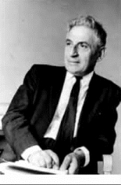
扎里斯基
在理海大学
自惠特尼通知我后，我同时也在外面找教书机会。那时理海大学数学系主任是雷纳（G．Raynar）教授，我已认识他多年，他对我很好，邀请我去理海发展微分几何。他让我开一套三门微分几何课。我因伯利恒城与普林斯顿很近，可常去听演讲，所以就决定到理海来。来后我就照原定计划工作，继续开微分几何课，训练研究生，到1958年我的第一个研究生获得博士学位。之后，我的学生人数就渐渐增多，最多时先后有八人之多（其中有两对，每对是同一年开始的）。那时有很多学校要聘我。最好的聘约是宾州州立大学的研究教授，那是一荣誉讲座教授职位，那大学又是一很好的学校。但因该校地址偏僻，当时又无高速公路通达，与各处中心隔绝，甚不方便，故我未接受聘约。此地教务长克里斯滕森（G．J．Christensen）知此事，与校长勒伊斯（W．D．Leuis）讨论后对我说：“校长与我愿尽我们能力所为，留你在此地。”因此后来迟些时候我向教务长建议创办微分几何杂志，目的是为发展微分几何研究，并使理海对该研究不孤立。此建议若向数学系或文理学院直接提出，必有人忌讳而反对，绝对会通不过。后来教务长告诉我，校长赞成我的建议，并要教务长同我与他会谈。我们见到校长后，他就问我：“办一杂志，最重要的人是编辑。我不知你的编辑，叫我如何能批准你的建议？”我回答说：“你不授权给我，我怎能去请编辑。”双方都有理，于是取折中办法，建议校长授权给我去请编辑。若编辑不好，校长可不批准。后来我请的编辑都是有名的大权威。校长马上批准我的建议，给我一等经费。于是微分几何杂志就可开始办了。我发出请编辑的信以后，有一位来电话问我：“我得到你的邀请信后，我就查阅今年《数学评论》（Mathematical Reviews）上批评的所有微分几何论文，在其中我找不到一篇有兴趣的论文，于是我怀疑是否值得办此杂志。”我就回答：“那是依照老的微分几何的定义。”他又问：“你的新定义为何？”我即答：“凡是与微分方程、微分拓扑、代数拓扑、李群、李代数等有关的几何论文都是属于微分几何。”他马上说：“这样，我就接受你的邀请。”微分几何杂志是在1967年创办的，迄今已20余年。现在微分几何成为一热门发展方向，完全同我二十几年前所想象的一样。这当然与这杂志不无关系，因它已提供了很多重要参考材料。
《微分几何》杂志现已为世界上最有名的数学杂志之一，销路甚广，同时我又尽力节省一切费用，因之获利不少。1989年3月理海大学先将50余万美元（一部分获利）设立“熊全治数学发展基金”。此基金每年仍将继续增多，此种基金不但在理海少有，即使在全美国亦只有伊利诺伊大学及加州大学伯克利分校有类似教学基金。现该基金用途之一是每年在理海举行有关几何及拓扑方面的世界数学年会。
在理海我总共指导20位研究生获得博士学位。他们大多仍继续在各大学任教，其中有好几位现分别担任系主任、研究院长及教务长等职。
格罗夫教授之晚年
在1963年左右格罗夫教授患上癌症，至1965年其癌细胞已扩散。众皆知其生命不能维持太久。翌年初，那里数学系主任来电话告知全系同仁为表扬格罗夫在教学上及该系发展上的贡献，曾向该校校长建议设立一“V．G．格罗夫教授”职位，但校长不赞成，只同意将当时正在建造的数学系图书馆命名为“V．G．格罗夫图书馆”。该系大多数教授认为校长所给予之荣誉不够大，问我意见如何？我要他们马上接受校长建议，其理由如下：一是荣誉不论大小，最宝贵的就是接受人能在生时享受到。二是该校长意见甚坚定而素难改变。若数学系不接受其建议，其会将此事拖延下去，格罗夫或不能等待。同年4月间该系主任又来电话告知系全体同仁已依我之意见接受校长建议，并且校长已正式宣布“V．G．格罗夫图书馆”之命名。后来格罗夫精神曾一度好转，暑期他去系里参加数学讨论会。至秋天其病复发，翌年1月间去世，享年七十有五。他去世前，知我创办的微分几何杂志将出版，惜看不到。后来我即用我在同年3月出版的创刊号上发表论文来追念他。
与邦皮亚尼教授之交往
关于射影微分几何研究当以意大利学派为最强，该派中又以邦皮亚尼（E．Bompiani）的贡献为最大。他确是一名天才教学家。我与1950年在麻省剑桥参加国际数学大会时首次会到他，以后我同他通过好几次信。1962年我访问罗马时，我去罗马大学找他，他已退休。我见到塞涅（B．Segne）教授，塞涅在射影微分几何及代数几何两方面都有很多好工作。塞涅即打电话约邦皮亚尼前来，不一会儿邦皮亚尼就来了。罗马市的交通复杂且乱，很难开车。我很惊奇他年龄已很大，还能在罗马开车。他告诉我，学校对他仍是很优待，给他一部车子及一司机，供他随时使用。他对我很亲切，并诚恳约我去他家看看。在他家我们谈得很多，在谈话中他几次流露出他对他的研究因方向不对不能传承于世甚为遗憾。关于这点我寄予无限同情。
与霍普夫教授之交往
我第一次见到霍普夫（H．Hopf）教授是1950年在哈佛大学，那时他在那里被邀请做一小时演讲，报告他对于文格斯坦（Wengestein）曲面的工作。1962年在瑞典斯德哥尔摩举行的国际数学大会上我报告一篇论文后，霍普夫替日本女几何学家桂田（Y．Katsurada）亦报告一篇论文。他报告完后，即邀我到外面同他谈谈。后来我们在外面谈得很久，谈得很好，什么都谈，已经解决及尚未解决的问题都涉及。他很谦虚地说：“我现在做那方面的工作。”后来我知道他当时是指他同桂田合作的工作。他又特别谈到格罗夫关于三次欧氏空间内两紧密凸曲面S 与S*之一特别微分同胚的定理。该定理是卡恩-瓦桑（S．Cahn-Vassen）关于S 与S*之一等距的定理的逆定理。霍普夫觉得格罗夫定理中关于高斯曲率的条件是多余的。他说他正在同他的几个学生一道设法证明那个想法，但当时我表示我觉得那条件是自然而必要的。结果他们没有证明出来。他因他太太生病，不能多出来，那时我差不多每隔一年就要去欧洲访问一次。后来除1966年在莫斯科举行的国际数学大会上见到他一次外［那时他正同苏联大几何学家亚历山大罗夫（P．Alexandroff）一道］，我特别去慕尼黑看过他两次。
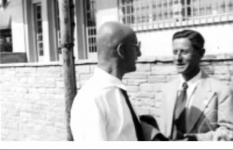
亚历山大罗夫（左）与霍普夫（1931年）
霍普夫去世后，他所在的学校（慕尼黑联邦高等技术学院）正在设立霍普夫图书馆来纪念他时，他们来信要复印霍普夫给我的信，存在他的图书馆内。可惜我只保留了一封。于是我就将那一封信给他们，不要他们复印。
霍普夫当然是数学史上的大数学家之一，他为人谦恭、诚恳，促拔学进，并且和蔼可亲。我不但非常敬佩他，至今我还常追念他。
与莫尔斯教授之交往
我于1950年在麻省剑桥参加国际数学大会时首次见到莫尔斯（M．Morse）教授，以后常在普林斯顿会见他。但我与他的交往只是普通而已。迄至其去世前十年左右，他待我亲切。当我在普林斯顿会见他时，他常同我久谈，范围亦广，包括其家属在内，并邀我至其家续谈。斯时他曾先后寄过好几篇论文向《微分几何》杂志投登，我都接受，并特提前在一年内发表，促使其在生时能看到。
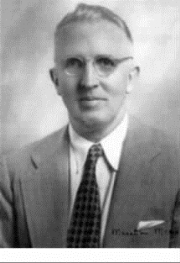
莫尔斯
莫尔斯教授去世后，其夫人曾要德国斯普林格出版社出版其论文全集。因其论文太多，该出版社恐不能获利，即予以拒绝。后经蒙哥马利（D．Montgomery）教授介绍，其夫人来信要我在新加坡世界科技出版社的一套理论数学书内出版。得此信后，我觉得他伟大加之同情，而接受莫尔斯夫人要求，出版莫尔斯全集（共6大本），并在与其有关数十张照片中选出6张适当的，使每本内皆有一张。此6张照片中，一张是其全家照，其他5张是代表其一生中5个不同的时代。
所担任过的职务及职业活动
职务如下：
（1）威斯康星大学讲师，1948—1950年。
（2）西北大学讲师，1950年秋季。
（3）哈佛大学研究员，1951年正月至1952年8月。
（4）理海大学助理教授，1952—1955年。
（5）理海大学副教授，1955—1960年。
（6）威斯康星大学美国陆军教学研究中心访问副教授，1959—1960年。
（7）理海大学正教授，1960—1984年（至退休）。
（8）加州大学伯克利分校访问专家，1962年春季学期。
（9）西班牙格拉纳达大学特聘教授，1986年1月至5月。
一些活动如下：
（1）我在理海大学的研究从1957年曾连续20年分别获得美国空军及国家科学基金会辅助。
（2）《微分几何》杂志创办人及主编。
（3）台北“中央研究院”的数学季刊的编辑。
（4）新加坡世界科技出版社编辑、顾问及理论数学图书的主编。
（5）以下列出主要国际会议上被邀请报告论文：
（甲）美国数学会与国家科学基金会合办之夏季研究会：
①1956年在西雅图的华盛顿大学关于全局微分几何。
②1962年在加州大学圣芭芭拉分校关于相对论及微分几何。
③1973年在斯坦福大学关于微分几何。
（乙）1964年及1972年在西德上沃尔法赫（Oberwolfach）之国家数学研究所主办之关于全局微分几何会议。
（丙）1970年国家科学基金会在密歇根州立大学主办之关于微分几何之区域会议。
（丁）1971年加拿大数学会在哈利法克斯（Halifax）、新斯科舍半岛（Nova Scotia）、达尔豪斯（Dalhousie）大学举行第13次两年一度的讨论会。
（戊）1972年春季在英国之华威（Warwick）大学举行之国际整体分析讨论会。
（6）1972年在美国数学会之夏季会议上被邀请一小时之特别演讲。
（7）被请来组织1980年4月17—18日美国数学会在费城举行之会议上的关于微分几何之特别会议。
（8）台北“中央研究院”、台湾大学及清华大学合办之1969年暑期科学研讨会议（由6月至8月）。
（9）1980年及1987年分别在武汉大学、复旦大学、江西大学、杭州大学及科学院讲学，每年均共枕有两三月。
我的研究及著作
除了发表论文，我还著有一微分几何教本（A First Course in Differential Geometry，New York：Wiley-Interscience，1981，260页；中译本：微分几何教程，熊一奇，杨文茂译，武汉大学出版社，1986，426页）。
在国内，我随苏步青先生研究局部射影微分几何。那时在国内外所发表之论文大部分是属于下列三方面：
（一）关于曲线、曲面及超曲面之射影不变式。
（二）在三元极高次元空间内之共辄纲理论。
（三）直纹线汇（rectlinear congiuenck）之理论。
到美国后我主要是研究整体微分几何，特别是积分几何。所发表之论文中特别有兴趣的是属于下列11个方面：
（一）关闭超曲面之闵可夫斯基—熊（Minkowski-Hsiung）积分公式。
（二）有界黎曼流形之消灭（vanishing）定理。
（三）有界之二度黎曼流形之等周（isopetimetric）不等式。
（四）有界黎曼流形之闵可夫斯基及克利斯托费尔（Christoffel）之唯一性定理。
（五）黎曼及凯勒（Kahler）流形之截面曲率与示性类（characteristic classes）关系。
（六）欧氏空间内子黎曼流形之局部及整体保形不变式。
（七）关于黎曼流形与球面有保形（conformal）或等距（isometric）关系之问题。
（八）在黎曼流形上曲线之全绝对曲率。
（九）六度球面上无复结构之证明。[1]
（十）殆复结构之新类。
（十一）凯勒流形之扩充流形的谱（spectral）几何。
我的所有研究工作中当以第九项为最重要。关于那项工作，我时断时续地花了十五六年的功夫，创造了一新微分几何方法，通过关于复运算元之甚复杂的计算，解决了数学上三四十年未解决之难题。我的主要公式将成为复流形几何上之一基本公式，推动复流形之一般理论的发展。最近我又继续此项工作得到殆复结构之一新分类，此分类当包括复结构在内。
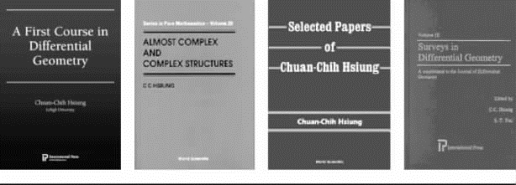
熊全治的部分著作
【注释】
[1]2011年5月4日注：“六度球面上无复结构”这个问题仍未解决，熊全治教授的证明并不正确。陈省身教授晚年也想证明这猜想，他的论文也被认为有不正确之处。